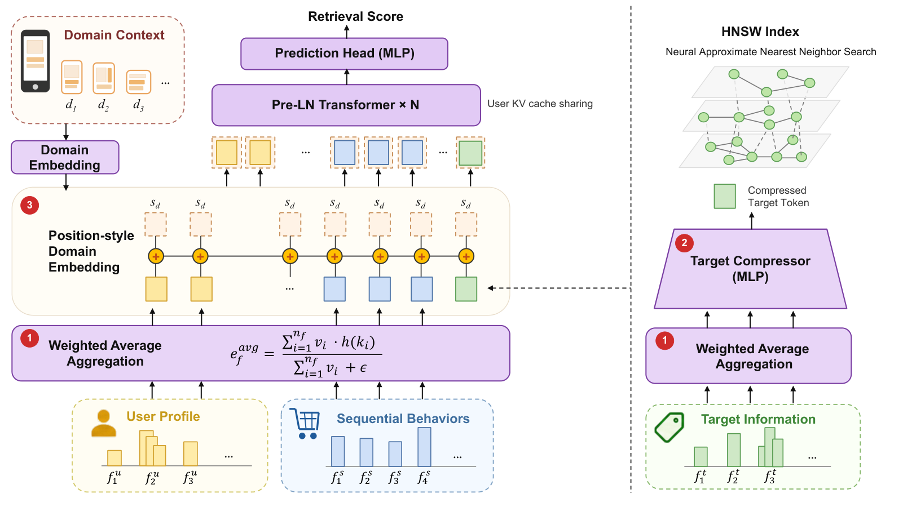
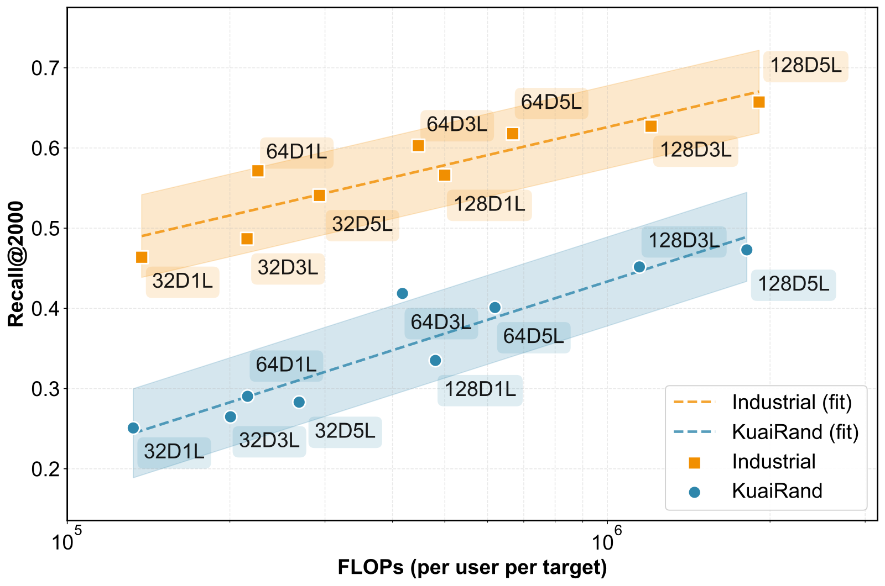

目录 · 10 节
1它到底在解决什么问题？2先看全景3改动一：特征聚合从求和改成平均4改动二：广告侧压成一个 token，把省下的算力投到模型上5改动三：域信息像位置编码一样加进去6规模曲线和主要对比7工程上怎么跑进 40 ms8我认为它的局限9一个召回团队可以怎么试10结论做召回的团队值得读，尤其是已经在用“打分模型 + 图索引”做召回、又想把模型做大的团队。它要解决的问题是：排序阶段已经有不少“模型越大越好”的结果，召回阶段却很少，因为召回要在几千万候选里几十毫秒内选出几千个，每个候选都要过一遍模型，算力被候选数放大。核心思想一句话：先把输入特征的尺度拉齐，再把广告侧的所有特征压成一个 token 省下算力，把省下的算力投到更宽更深的 Transformer 上。几个关键数字：每个候选的计算量从约 0.14 加到 1.91 MFLOPs（百万次浮点运算），工业数据上的 Recall@2000 从 0.464 升到 0.657；线上 5% 流量跑了一个月，平台收入提升 2.53%，P99 延迟和原系统一样在 40 ms 以内。
它到底在解决什么问题？
先看一个示意场景。用户打开淘宝某个页面，展示广告系统要从 5200 万个广告里挑出 2000 个候选交给后面的排序。阿里这套召回不是双塔，而是基于模型的召回：广告预先建成一张 HNSW 图（一种分层的近邻搜索图），一个打分模型沿着图做 beam search，每次请求只真正打分约 4 万个广告，约占全库的 0.08%。
双塔只能用用户向量和广告向量的内积打分，用户和广告的特征没法细粒度交叉；基于模型的召回可以用任意复杂的打分网络，代价是每个被访问的候选都要做一次前向计算。所以这里最贵的不是用户侧，而是每个候选上的计算量，它会被 4 万倍放大。
在这种设定下想把打分模型换成更大的 Transformer，作者列了三个障碍：
| 障碍 | 具体表现 | TransRetrieval 的对策 |
|---|---|---|
| 特征尺度不一 | 用户侧多值特征（比如几十个历史类目）求和后，向量长度可达广告侧的 10 倍 | 把求和改成加权平均 |
| 候选侧算力太贵 | 每个广告的每个特征都是一个 token，算力随特征数线性增长，再乘以 4 万 | 广告侧特征用一个 MLP 压成 1 个 token |
| 多个业务域 | 首页、搜索、详情页等分布不同，分开训练成本翻倍，小域数据又不够 | 给每个域学一个向量，像位置编码那样加到所有 token 上 |
三处改动都只用标准算子，不需要新的基础设施。下面逐个讲为什么这样做、效果多大。
先看全景

一次请求的计算流程：
| 步骤 | 做什么 | 每次请求算几次 |
|---|---|---|
| 1. 用户侧编码 | 用户特征和行为序列聚合成 token，加上域向量，算出各层的 KV 并缓存 | 1 次 |
| 2. 广告侧压缩 | 广告特征聚合后经 MLP 压成 1 个 token（可以离线算好） | 预先算好，特征变化时近线更新 |
| 3. 候选打分 | 广告 token 作为查询，对缓存的用户 KV 做注意力，再过预测头 | 约 4 万次 |
| 4. 图搜索 | 按打分在 HNSW 图上做 beam search，选出前 2000 | 和打分交替进行 |
改动一：特征聚合从求和改成平均
推荐里的一个特征字段常常包含多个值，比如“最近点击的类目”可能有几十个，每个值带一个权重。常规做法是把这些值的 embedding 按权重加起来。问题在于，加起来的向量长度会随值的数量增长。手算一下（示意）：100 个长度为 1 的 embedding，如果方向互不相关，和的长度约为 √100=10；如果方向一致，长度是 100。而广告侧很多字段只有一个值，长度就是 1。作者实测，用户侧 token 的长度最多是广告侧的 10 倍。
这为什么有害？注意力分数是查询和键的点积，键越长分数越大。设两个键和查询的方向相似度一样，原本点积都是 0.5；其中一个长度放大 10 倍，点积变成 5，softmax 后它拿到 e^5/(e^5+e^0.5)≈0.99 的权重，另一个几乎被忽略。作者认为这就是 Transformer 在推荐特征上越堆越没用的原因。
改法是除以权重之和：
这样一来，不管字段有几个值，结果的长度都不会超过单个 embedding 的量级。它不需要学习参数，也不需要统计量。
消融（64D-5L 配置，工业数据 Recall@2000）：
| 聚合方式 | 总体 Recall@2000 |
|---|---|
| 加权平均（本文） | 0.618 |
| 加权求和 | 0.608 |
| 求和后再做 LayerNorm | 0.593 |
| 最大池化 | 0.571 |
这说明平均确实最好，但比求和只高 1.0 个点。摘要把它称为“关键”，这个幅度显得偏小。另外有两点值得注意。第一，平均只保证长度有上界，没有保证各字段长度相等：100 个方向不相关的向量取平均，长度反而会缩到约 0.1，作者没讨论这种情况。第二，模型本身是 Pre-LN Transformer，每层进入注意力之前都会先做 LayerNorm，按理会把各 token 的长度拉齐，“长 token 霸占注意力”的解释和架构不完全对得上。更可能的作用途径是残差流里的尺度差异，但论文没有做这方面的分析。
改动二：广告侧压成一个 token，把省下的算力投到模型上
作者给了一次请求里所有候选打分的总计算量公式：
D 是隐藏维度， 是被打分的候选数， 是每个候选的 token 数， 是用户侧 token 数， 是层数。D 和层数是想加大的，候选数已经被 HNSW 压到 0.08%，剩下能动的只有 。所以作者把广告侧所有特征拼起来，过一个三层 MLP（宽度 8D、4D、D）压成一个 D 维 token。
论文表格里报告的是每个候选的计算量，也就是这个公式去掉 后的 ，可以用它验算。论文没有直接给 ，我用 64D-3L、8 个 token、3.04 MFLOPs 反推出 约 240（我的推算）。代回去：
| 配置 | 公式估算（MFLOPs） | 论文报告 | Recall@2000 |
|---|---|---|---|
| 64D-3L，8 个 token | 4×64×8×(256+240)×3≈3.05 | 3.04 | 0.624 |
| 64D-3L，4 个 token | 约 1.52 | 1.55 | 0.615 |
| 64D-3L，1 个 token | 约 0.38 | 0.45 | 0.603 |
| 128D-5L，1 个 token | 4×128×1×(512+240)×5≈1.92 | 1.91 | 0.657 |
公式和报告值基本吻合，1 个 token 时多出的约 0.07 应该是压缩 MLP 本身的开销。这张表说明了作者的思路：压到 1 个 token，计算量降约 85%，Recall 掉 2.1 个点；但把省下来的算力用来把模型从 64D-3L 加到 128D-5L，计算量仍比 8 个 token 的小模型低（1.91 对 3.04），Recall 反而高 3.3 个点。按每次请求 4 万个候选算，128D-5L 每次请求的候选侧计算约 76 GFLOPs（我的推算）。
另外一个好处是，这个压缩 token 本身就是固定维度的向量，可以直接用来建 HNSW 索引。广告特征变了，只需近线重算受影响广告的 token。
改动三：域信息像位置编码一样加进去
阿里展示广告服务 4 个业务域。把数据混在一起训一个模型，模型分不清请求来自哪个域；常见做法是在序列里加几个“域 token”，但每多一个 token，注意力成本就增加。作者的做法是给每个域学一个 D 维向量，直接加到每个 token 上，和位置编码一样，序列长度不变，Transformer 所有参数在各域之间完全共享。
| 做法（64D-3L，工业数据） | 总体 Recall@2000 | 用户侧 MFLOPs |
|---|---|---|
| 每个域单独训练 | 0.579 | 41.3 |
| 混合训练，不加域信息 | 0.265 | 41.3 |
| 混合训练，加 1 个域 token | 0.337 | 41.8 |
| 混合训练，加 20 个域 token | 0.452 | 49.8 |
| 混合训练，域向量加到每个 token（本文） | 0.603 | 41.3 |
这说明域信号必须足够强，混合训练才有收益：加 1 个 token 几乎没用，重复 20 次才明显好转，而加到每个 token 上效果最好、不增加计算。和各域单独训练相比，B 域从 0.539 升到 0.590，提升最大，A 域只从 0.591 到 0.593。
不过这张表有一个让人疑惑的地方：不加域信息的混合训练只有 0.265，比单域训练的 0.579 低一半以上。四个域都是同一个广告平台的流量，混在一起训练就掉到这个程度，很不寻常，论文没有解释原因。另外在公开数据 KuaiRand 上，最稀疏的 Tab 3（只占 0.13% 的交互）TransRetrieval 是 0.537，反而低于 HSTU 的 0.611，“小域靠跨域迁移受益”这个说法在公开数据上并不总成立。
规模曲线和主要对比

从 32D-1L 到 128D-5L，工业数据的 Recall@2000 从 0.464 升到 0.657，KuaiRand 从 0.251 升到 0.473，对数线性拟合的 R² 分别是 0.82 和 0.88，说明趋势总体稳定但点的散布不小。和基线比（工业数据总体 Recall@2000）：
| 方法 | Recall@2000 | 每个候选 MFLOPs |
|---|---|---|
| 双塔 KuaiFormer-128D5L | 0.495 | 0.011（摊销） |
| 原生产系统 | 0.576 | 0.69 |
| HSTU-128D5L | 0.527 | 1.72 |
| RankMixer-768D16T | 0.531 | 150.99 |
| TransRetrieval-64D3L | 0.603 | 0.45 |
| TransRetrieval-128D5L | 0.657 | 1.91 |
64D-3L 用比原生产系统少 35% 的计算量，Recall 高 2.7 个点；128D-5L 比计算量大近 80 倍的 RankMixer-768D16T 高 12.6 个点。双塔模型把维度翻倍只从 0.485 到 0.495，说明内积打分的上限确实卡住了它。
线上在阿里展示广告 5% 流量上做了一个月 A/B，只换召回模型：
| 指标 | A 域 | B 域 | C 域 | D 域 | 总体 | 95% 置信区间 |
|---|---|---|---|---|---|---|
| 平台收入 | +1.72% | +2.51% | +5.39% | +0.87% | +2.53% | [2.22%, 2.70%] |
| 千次展示收入（RPM） | +1.22% | +2.18% | +3.69% | +0.43% | +1.28% | [1.14%, 1.56%] |
单机 QPS 从 300 降到 230，靠横向扩容补上，P99 延迟仍在 40 ms 以内；广告主 ROI 基本持平（+0.06%）。收入涨幅约是 RPM（千次展示收入）的两倍，按收入等于 RPM 乘以展示量推算，展示量大约多了 1.2%（我的推算），论文没有说明这部分来自哪里。
工程上怎么跑进 40 ms
模型变大之后还能守住延迟，靠的是几项和模型配套的系统改动，论文给了每项的收益：
| 改动 | 做法 | 效果 |
|---|---|---|
| 用户 KV 共享 | 通用 LLM 推理框架会给每个候选序列复制一份用户 KV，这里改成一个广播算子，不复制 | 单次前向延迟降 30% |
| 候选打包 | 压缩后每个候选只有 1 个查询 token，GPU 利用率很低；把多个候选拼进一次批量计算，用掩码隔开 | 和算子融合一起，前向延迟比朴素实现快 11 倍 |
| 图搜索上 GPU | 原来索引在 CPU，每轮 beam search 都要在 CPU 和 GPU 之间来回传数据；现在邻居查找、距离计算、候选选择都在 GPU 上 | 召回延迟比 CPU 版降 89% |
| 省显存 | 整个图索引放进 GPU 后显存吃紧；多个请求改为共用同一份驻留在显存里的推理引擎，不再各自占一份，索引里不变的数据再做量化压缩 | 同一块 GPU 能同时处理的请求数提高 3 倍 |
这些数字说明，基于模型的召回能不能换成 Transformer，一半取决于模型设计，另一半取决于推理系统。单个候选只有 1 个查询 token 的形状和 LLM 推理很不一样，直接套用现成框架会浪费大量算力。
我认为它的局限
第一，“规模定律”的证据范围有限。计算量只跨了约 14 倍（0.14 到 1.91 MFLOPs），R² 为 0.82，图上同等计算量下维度和层数的不同组合差距明显，说明不能只看计算量，形状也重要。再往上加是否还按同样斜率增长，论文没有验证。
第二，最被强调的“关键”改动收益最小。加权平均比求和只高 1.0 个点，也没有给出“用求和时规模曲线变平”的对照，所以“尺度不一导致无法扩展”这个核心论断缺少直接证据。
第三，基线的公平性存疑。所有方法共用一套为本文调好的超参数，RankMixer 原本是排序模型，被改造用于召回。HSTU 和 RankMixer 的弱表现有多少来自方法本身、多少来自调参和改造，难以区分。
一个召回团队可以怎么试
- 先查自己模型里各 token 的向量长度。如果多值特征字段的长度比单值字段大很多，把求和换成加权平均，成本几乎为零。
- 如果用的是基于模型的召回，用论文的公式算一下候选侧的计算量构成。只要候选 token 数大于 1，压缩成 1 个 token 再把算力投到维度和层数上，很可能是性价比最高的改法。
- 有多个业务场景共用召回时，先试把场景向量加到每个 token 上，和现有的分场景模型比较，重点看小场景。
- 做规模实验时固定计算量、改变宽度和深度的组合，不要只画一条“计算量—效果”曲线。
结论
一句话：召回阶段的 Transformer 也能靠加算力变好，前提是把候选侧压到一个 token，把算力花在模型本身上。
| 维度 | 评价 |
|---|---|
| 问题重要性 | 高。召回阶段的模型扩展一直落后于排序 |
| 方法创新性 | 中。三处改动都很简单，价值在于组合和工程落地 |
| 实验证据 | 中偏强。两个数据集加一个月的线上 A/B，但规模区间窄、核心消融幅度小 |
| 工程成本 | 中。模型改动小，但要配套 KV 共享、GPU 图搜索和近线更新 |
| 是否值得尝试 | 值得。尤其是加权平均和候选侧压缩，改动小、容易验证 |
读完这篇，你觉得
夜读鸮记下了，谢谢你的反馈。
点一下即可，无需登录；再点一次撤回。只统计匿名次数，不记录你是谁。
讨论
欢迎补充实验细节、复现经验或不同看法。需 GitHub 登录。
正在加载讨论…